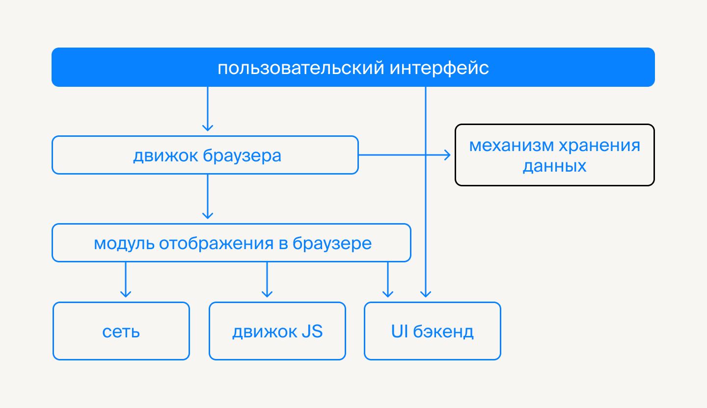

Подключение к html +
JS внутри html или как отдельный файл
<body>
<!-- inline js-code -->
<script>
alert('Hello, World!');
</script>
<!-- external js file -->
<script src="file.js">
// этот код будет проигнорирован, так как у тега скрипт есть аттрибут src
alert(123);
</script>
<!-- if JS is turn off in a browser -->
<noscript>
<p>Please, turn on JS!</p>
</noscript>
</body>
Аттрибуты async и defer
<!DOCTYPE html>
<html lang="en">
<head>
<meta charset="UTF-8" />
<meta name="viewport" content="width=device-width, initial-scale=1.0" />
<title>1. JS - Connect to html</title>
<!-- css -->
<style>
/* css-стили */
</style>
<!-- Подключение внешнего css файла -->
<link rel="stylesheet" href="/path/to/your/styles.css" />
<!-- SCRIPT HEAD -->
<!--
подключение скрипта в head - блокируется отрисовка html часто для подключения сторонних библиотек, будет блокироваться отрисовка html пока на загрузится скрипт
-->
<!-- часто для подключения сторонних библиотек -->
<script src="some-lib.js">
// если указан аттрибут src, то код внутри скрипта будет проигнорирован
console.log('Ignore inside');
</script>
<!-- SCRIPT ASYNC -->
<!--
- Работает только с src
- Место расположения в коде не влияет на его загрузку
- Скрипт будет загружаться сразу, не дожидаясь и не блокируя отрисовку html
- После загрузки БУДЕТ СРАЗУ ВЫПОЛНЯТЬСЯ и будет блокировать отрисовку html
- Если скриптов с async несколько, то порядок их загрузки и выполнения может не совпать с порядком в коде. Какой скрипт загрузится первым - тот и будет первым выполняться.
-->
<script src="script1.js" async></script>
<script src="script2.js" async></script>
<script src="script3.js" async></script>
<!-- SCRIPT DEFER -->
<!-- Работает только с src
- Место расположения в коде не влияет на его загрузку
- Скрипт будет загружаться сразу, не дожидаясь и не блокируя отрисовку html
- После загрузки БУДЕТ ЖДАТЬ полную отрисовку html и не будет выполняться пока html не загрузится
- Если скриптов с defer несколько, то порядок их выполнения БУДЕТ СОВПАДАТЬ с порядком в коде (пока не выполнился первый,
- Второй будет ждать, даже если загрузился раньше) -->
<script src="script1.js" defer></script>
<script src="script2.js" defer></script>
<script src="script3.js" defer></script>
<!-- jQuery link -->
<script src="https://ajax.googleapis.com/ajax/libs/jquery/3.7.1/jquery.min.js"></script>
</head>
<body>
<h1>0.1 JS - Connect to html</h1>
<!-- SCRIPT перед body -->
<!-- перез закрывающимся тэгом /body - хорошая практика, чтобы не блокировалось отрисовка html -->
<script>
// js-code можно писать внутри тега script
// свой код лучше всегда писать здесь
// alert блокирует отрисовке html всегда
alert('Я всегда блокирую отрисовку html, где-бы я не находился!');
jQuery(() => {
// jquery code
console.log('jQuery', jQuery);
$('body').css({
transitionDelay: '2s',
transitionProperty: 'color background-color',
transitionDuration: '1s',
backgroundColor: 'maroon',
color: 'white',
});
});
</script>
<noscript>
<h1>Сообщение, что в браузене не включени JS!</h1>
</noscript>
</body>
</html>
Хороший тон подключать все скрипты перед </body>. Чтобы они не блокировали отрисовку html, если возникнут какие-лио ошибки.
Обычное подключение
- Загружаются друг за другом (порядок как в коде)
- Выполняются друг за другом (порядок как в коде)
- Блокируют отрисовку html пока не загрузятся и не выполняться
...
<script src="script1.js"></script>
<script src="script2.js"></script>
<script src="script3.js"></script>
</body>
Загрузкой скриптов можно управлять с помощью аттрибутов async и defer и их расположение в html-коде уже не будет влиять.
Асинхронное (async)
- Работает только с src
- Место расположения в коде не влияет на его загрузку
- Скрипт будет загружаться сразу, не дожидаясь и не блокируя отрисовку html
- После загрузки БУДЕТ СРАЗУ ВЫПОЛНЯТЬСЯ и будет б�локировать отрисовку html
- Если скриптов с async несколько, то порядок их загрузки и выполнения может не совпать с порядком в коде. Какой скрипт згрузится первым - тот и будет первым выполняться.
...
<script src="script1.js" async></script>
<script src="script2.js" async></script>
<script src="script3.js" async></script>
</body>
Отложенное (defer)
- Работает только с src
- Место расположения в коде не влияет на его загрузку
- Скрипт будет загружаться сразу, не дожидаясь и не блокируя отрисовку html
- После загрузки БУДЕТ ЖДАТЬ полную отрисовку html и не будет выполняться пока html не загрузится
- Если скриптов с defer несколько, то порядок их выполнения БУДЕТ СОВПАДАТЬ с порядком в коде (пока не выполнился первый, второй будет ждать, даже если загрузился раньше)
...
<script src="script1.js" defer></script>
<script src="script2.js" defer></script>
<script src="script3.js" defer></script>
</body>
JS и браузер
Основные компоненты браузера. Браузер - это дом для JS, а через DOM JS �взаимодействует с HTML.
Пользовательский интерфейс — включает адресную строку, кнопки «назад» и «вперёд», меню закладок и т. д. В пользовательский интерфейс входит всё, что видит пользователь, за исключением окна с содержимым страницы.
Движок браузера — обеспечивает взаимодействие между пользовательским интерфейсом и движком рендеринга. Механизм рендеринга — **отвечает за отображение веб-страницы. Механизм рендеринга анализирует HTML и CSS и отображает содержимое на экране.
Сеть — сетевые вызовы, такие как XHR-запросы. Их реализация различается в зависимости от платформы.
Бэкенд пользовательского интерфейса — рисует основные виджеты, такие как флажки и окна. Этот бэкенд предоставляет универсальный интерфейс, который не зависит от платформы. Он использует методы пользовательского интерфейса операционной системы.
Движок JavaScript — выполняет JavaScript. Например, V8 в Сhrome.
Хранилище данных — возможно, вашему приложению потребуется хранить все данные локально. Типы механизмов хранения: localStorage, indexDB, Web SQL (не рекомендован, но знать о нём нужно), файловая система.
Ограничения JS в браузере
Разработчики веб-приложений сталкиваются с несколькими ограничениями:
- Нельзя взаимодействовать с файловой системой.
- Нет доступа к сетевым функциям, кроме тех, что предоставляет сам браузер.
- Невозможны многопоточные вычисления. Есть воркеры, но они не решают проблему полностью.
- Нельзя создавать новые процессы или запускать программы.
NodeJS из «коробки» позволяет обойти некоторые из этих ограничений.